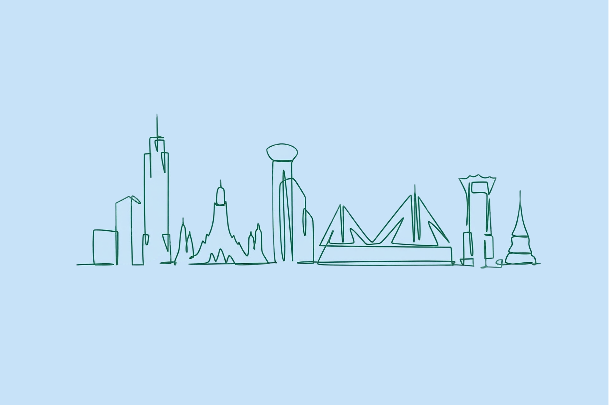

Local Guide & Travel Info
2026.9.26 – 10.1 · 아시아나항공
방콕 실시간 72시간 예보
불러오는 중…
카드를 누르면 지도로
급할 때 쓰는 태국어
날씨는 Open-Meteo 무료 API의 방콕(13.7563, 100.5018) 실시간 예보다. 페이지를 열 때마다 새로 불러온다.
장소 80곳은 Google 지도 저장 목록 Bangkok·Bangkok🇹🇭 두 개를 병합한 것이다 (85건 중 중복 4건 제거). 이름·평점·리뷰수·카테고리는 2026-09-08 기준이고 평점은 변하니 참고용이다. Google이 음식점으로만 분류한 몇 곳은 이름을 보고 태국으로 재분류했다.
\n 항공편은 예약 정보 기준이며, 비행시간은 KST–ICT 2시간 시차로 계산한 값이다.
태국어 구문과 숫자는 직접 작성했다 — 공식 출처를 인용한 것이 아니므로, 현지인에게 보여줄 용도라면 한 번 검수받는 편이 안전하다.
긴급 번호는 EMERGENCY, 준비물은 CHECKLIST, 러닝 코스는 RUN TRACKS.